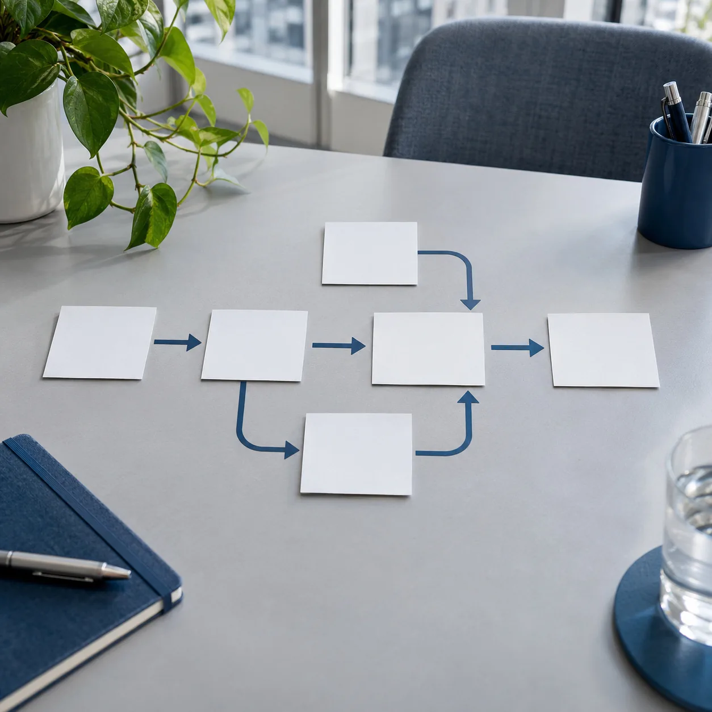

CONSULTORÍA PARA EMPRESAS
LAbusinessconsulting
Consultoría para decidir con claridad.
Analizá tu negocio, entendé su rentabilidad y ordená tus procesos. La próxima decisión empieza con una mirada clara.
Análisis de negocios · Rentabilidad · Gestión
Una mirada,
cuatro focos.Análisis de negociosRentabilidadFlujo de fondosProcesos
cuatro focos.Análisis de negociosRentabilidadFlujo de fondosProcesos
QUÉ RESOLVEMOS
Las preguntas que mueven tu empresa.

La gestión también necesita una buena base.
Servicios complementarios: contabilidad e impuestos.QUIÉNES SOMOS
Una mirada de negocio. Con los pies en tu realidad.
Labusinessconsulting es una consultora para empresas. Trabajamos sobre el análisis del negocio, la rentabilidad, el flujo de fondos y la optimización de procesos.
Conectamos estas áreas para que la información ayude a ordenar prioridades y acompañar la gestión.
Conocé la consultoraEntender primero.
Decidir con perspectiva.
EL PUNTO DE PARTIDA
Del contexto a una prioridad concreta.
Cada empresa tiene sus propias preguntas. La primera conversación sirve para reconocerlas.
- 01
Entender el contexto
Qué hace tu empresa, cómo trabaja y qué necesitás resolver.
- 02
Definir el foco
Identificar el área de trabajo y la información que vale la pena revisar.
- 03
Conversar el alcance
Acordar el próximo paso según las necesidades de tu negocio.
UBICÁ TU PRIORIDAD
¿Qué necesitás mirar hoy?
Elegí lo que más se parece a tu situación y encontrá un punto de partida para la consulta.
Orientación inicial. El alcance se define al conocer tu empresa.
UN POSIBLE PUNTO DE PARTIDA
Análisis de negocios
Revisar la información de gestión para reconocer prioridades y preguntas pendientes.
Para conversar: contanos qué indicadores usás y qué información te falta.
Antes de conversar.
¿Qué temas podemos trabajar?
Análisis de negocios, rentabilidad, flujo de fondos y optimización de procesos. También ofrecemos servicios complementarios de contabilidad e impuestos.
¿Por dónde conviene empezar?
Contanos qué está pasando en tu empresa y qué necesitás resolver. Esa primera conversación permite definir el foco de la consulta y la información a revisar.
¿La consultoría incluye contabilidad e impuestos?
Contabilidad e impuestos son servicios complementarios. El alcance se conversa según las necesidades de cada empresa.
¿Cómo puedo contactarlos?
Podés escribirnos por WhatsApp al +54 9 11 2663-0042 o encontrarnos en Instagram como @LAbusinessconsulting.
HABLEMOS DE TU EMPRESA